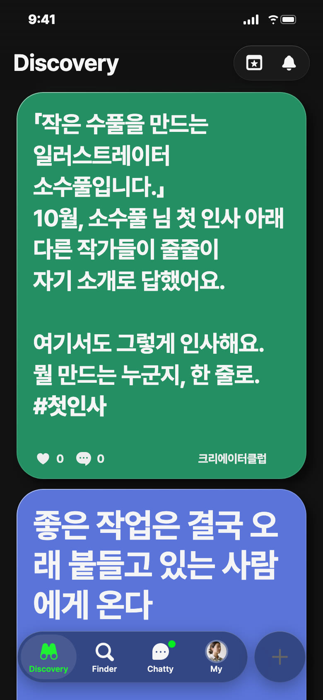
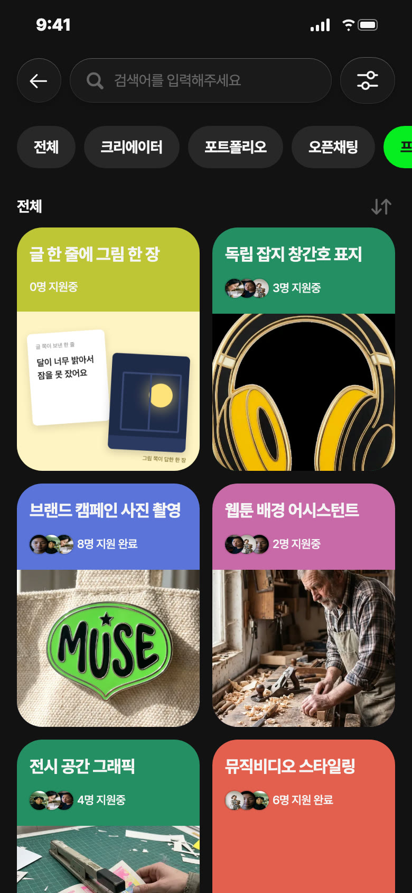
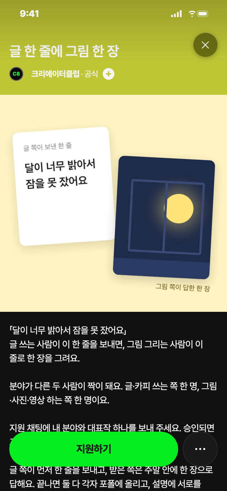
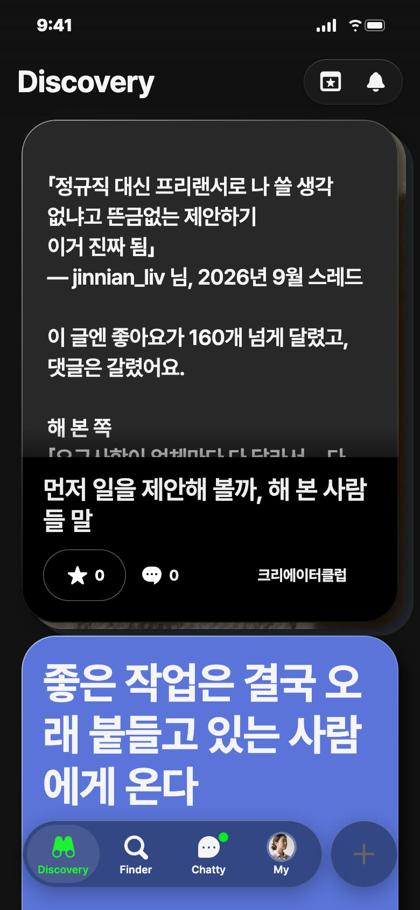
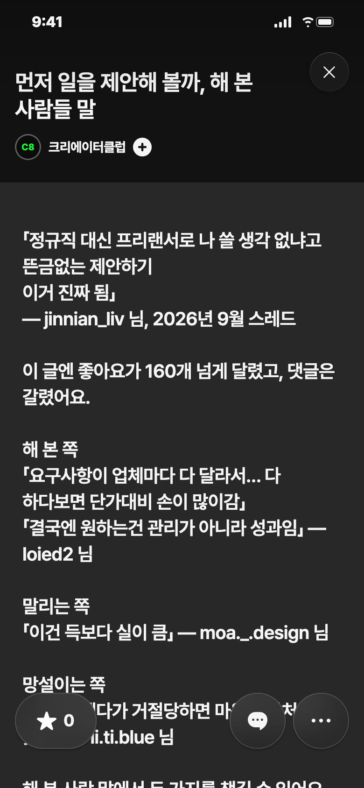

C8 앱 게시 시안 · 11/5(목) — 오늘 추천: 영감 · 낮 12시

칸: 창작자 말 그대로 × 잇기
출처: 소수풀(@so_su_pul) 스레드 2026-10-07 「안녕하세요. 작은 수풀을 만드는 일러스트레이터 소수풀입니다.」 좋아요 123·댓글 21, 댓글에 울리아트·toto_seohee 등이 자기 소개로 답함(11/5 원문 열어 확인)
왜 오늘: 목요일은 창작자 말 그대로로 쉬어 가는 날이에요. 남의 첫 인사 한 줄이 내 한 줄을 쓰게 해요
보낼 사람: 앱에 가입만 해 둔 그림 친구에게 「여기 한 줄 인사 남겨」
받고 싶은 댓글: 「종이에 수채로 동네 고양이를 그리는 ○○예요」
젠지 별점: ★4 — 보낼 이유: 인사 댓글이 회원에게 무엇을 남기는지(노크·팔로우)가 글 안에 직접 없어 애매로 뺌
「작은 수풀을 만드는 일러스트레이터 소수풀입니다.」 10월, 소수풀 님 첫 인사 아래 다른 작가들이 줄줄이 자기 소개로 답했어요. 여기서도 그렇게 인사해요. 뭘 만드는 누군지, 한 줄로. #첫인사


칸: 함께 만들기 × 놀이
왜 비축: 기간·짝 정해 줄 사람·방 지킬 사람이 아직 없어요(샐리가 정할 것)
보낼 사람: 카피 쓰는 친구에게 「너 한 줄 주면 내가 그려 볼게」
받고 싶은 지원 채팅: 「영상 해요. 글 한 줄 받아서 15초로 찍어 보고 싶어요」
글 한 줄에 그림 한 장
함께하기 · 협업
글·카피 쓰는 사람 5명 · 그림·사진·영상 하는 사람 5명 · 기간 {미정} · 상품 없음「달이 너무 밝아서 잠을 못 잤어요」 글 쓰는 사람이 이 한 줄을 보내면, 그림 그리는 사람이 이 줄로 한 장을 그려요. 분야가 다른 두 사람이 짝이 돼요. 글·카피 쓰는 쪽 한 명, 그림·사진·영상 하는 쪽 한 명이요. 지원 채팅에 내 분야와 대표작 하나를 보내 주세요. 승인되면 그룹 채팅방에서 짝을 정해요. 글 쪽이 먼저 한 줄을 보내고, 받은 쪽은 주말 안에 한 장으로 답해요. 끝나면 둘 다 각자 포폴에 올리고, 설명에 서로를 멘션해요. 상품은 없어요. 남는 건 다른 분야 사람과 처음 해 본 작업 한 편이에요. 위 한 줄은 C8이 지어낸 거예요.


칸: 일 받기 × 쓸모
출처: jinnian_liv 스레드 2026-09-21 좋아요 163, 댓글 loied2·moa._.design·li.ti.blue(11/5 원문 열어 확인)
왜 비축: 남의 글과 댓글 넷을 인용해 허락이 필요하고, 11/3 「노크 메시지」와 같은 첫 메시지 소재라 한 주 띄워요
보낼 사람: 회사에 먼저 연락해 볼까 고민하는 프리랜서 친구에게 「해 본 사람들 말이래」
받고 싶은 댓글: 「제작 범위랑 수정 2회까지 적고 레퍼런스 링크 하나 붙였더니 답 왔어요」
먼저 일을 제안해 볼까, 해 본 사람들 말
「정규직 대신 프리랜서로 나 쓸 생각 없냐고 뜬금없는 제안하기 이거 진짜 됨」 — jinnian_liv 님, 2026년 9월 스레드 이 글엔 좋아요가 160개 넘게 달렸고, 댓글은 갈렸어요. 해 본 쪽 「요구사항이 업체마다 다 달라서… 다 하다보면 단가대비 손이 많이감」 「결국엔 원하는건 관리가 아니라 성과임」 — loied2 님 말리는 쪽 「이건 득보다 실이 큼」 — moa._.design 님 망설이는 쪽 「그렇게 했다가 거절당하면 마음에 상처입을 듯 ㅜ」 — li.ti.blue 님 해 본 사람 말에서 두 가지를 챙길 수 있어요. 1. 어디까지 할지 먼저 적어요 요구사항이 회사마다 다르니, 첫 메시지에 맡을 일과 범위를 적어 두면 손이 끝없이 늘지 않아요. 2. 비슷한 일을 해낸 작품 하나를 붙여요 원하는 게 성과라면, 말보다 결과물 하나가 빨라요. 먼저 제안해 본 적 있다면 그때 첫 메시지에 뭘 적었는지 댓글로 보여 줘요. 다음에 보낼 사람이 그대로 참고할 수 있어요. #먼저제안
「정규직 대신 프리랜서로 나 쓸 생각 없냐고」